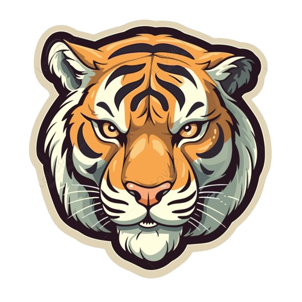

SysAdmin | Soporte Técnico
Profesional de soporte técnico con +8 años de experiencia en administración de sistemas, gestión de incidencias y mantenimiento de infraestructura tecnológica.
Especializado en resolución de problemas, optimización de procesos y continuidad operativa.
Windows Server, Active Directory, Exchange
IP, DNS, DHCP, VLANs, troubleshooting
Hardware, software, troubleshooting avanzado
CCTV, biométricos, control de acceso
Microsoft 365, AWS básico
HTML, CSS, JavaScript
Power BI, reportes operativos
GitHub, VS Code, Contpaqi
Administración de infraestructura y soporte técnico garantizando continuidad operativa.
Funciones:Soporte técnico remoto y presencial a usuarios de todos los niveles, incluyendo directivos, en México, Colombia, Guatemala y El Salvador.
Funciones:Atención de incidencias y mantenimiento de equipos.
Funciones:Desarrollo de sistema web con HTML, CSS y JavaScript, implementando lógica para identificar automáticamente el precio más bajo y mejorar la experiencia del usuario.
📄 Clic para ir al enlace
Diagnóstico y solución de errores en reportes, validación de registros y sincronización de datos en sistema de control de asistencia.
Implementación de entorno virtual con gestión de usuarios, grupos y políticas de seguridad (GPO).
Simulación de red local con asignación de direcciones IP, configuración de DHCP y DNS.
Aplicación de configuraciones de seguridad en Windows, control de accesos y optimización de servicios.
Migracion de cuentas de correo IMAP a Exchange, para integrar aplicaciones.
📄 Clic para ver documentación
Programacion de respaldos con periocidad de un mes, para carga masiva de documentos por parte del cliente.
📄 Clic para ver documentación
Elaboracion de dashboard que permita al departamento de RH, monitorear los registros de entrada y salida de los colaboradores.
📄 Clic para ver documentación
Contexto: Reportes manuales de asistencia.
Problema: Procesos lentos y propensos a error.
Diagnóstico: Identificación de fuentes de datos y flujo manual.
Solución: Desarrollo de dashboard automatizado en Power BI.
Resultado: Reducción de tiempo de análisis y mejora en toma de decisiones.
📄 Ver manual completoContexto: Ficha tecnica de mejoras y propuestas implementadas.
Problema: Informacion administrada de manera ambigua.
Diagnóstico: Procesos sin documentar.
Solución: Documentacion y control de actividades.
Resultado: Implementacion de manuales de servicio.
📄 Ver manual completoContexto: Aplicativo para registro de entrada y salida.
Problema: La administración no tenia manera de registrar la hora de llegada de los colaboradores.
Diagnóstico: Registro de entradas y salidas incluyendo hora de comida.
Solución: Elaboracion de un checador facil y practico con ubicacion incluida.
Resultado: Cumplimiento inmediato del horario establecido.
📄 Ver manual completoEmail: tuemail@gmail.com
Teléfono: 81XXXXXXXX